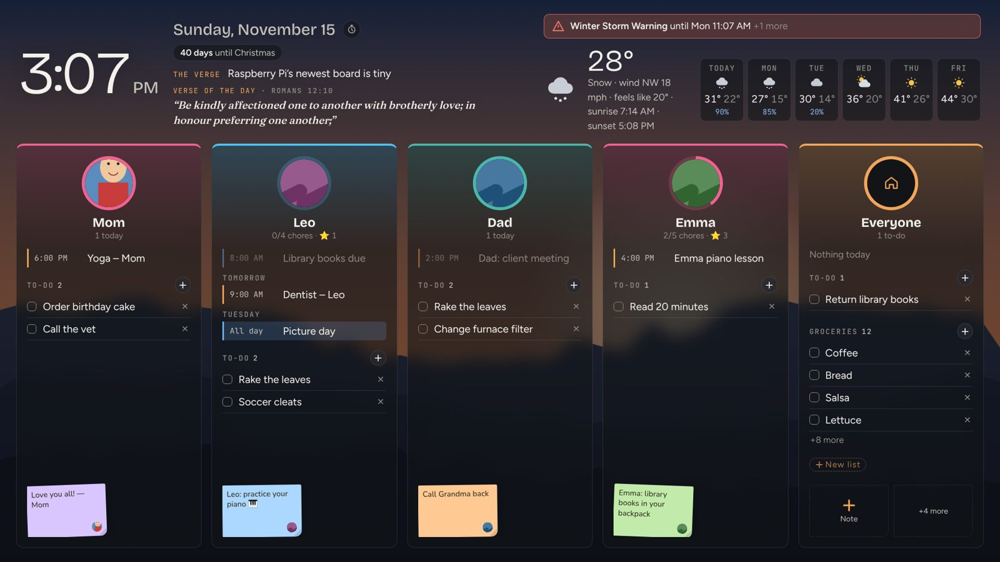
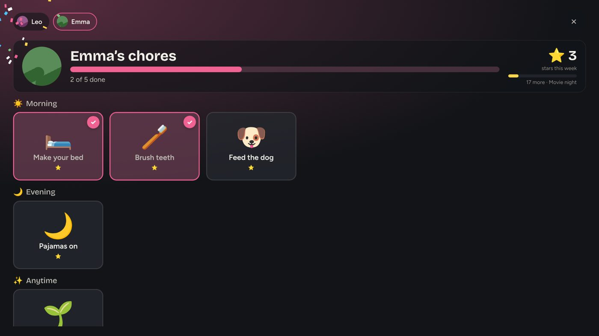

Kin·Dock
/ ˈkin-däk /
The family wall display
Everyone's calendars, the chore chart, grocery lists, this week's dinners and your family photos, on one screen in the kitchen. One look on the way out the door and everybody knows what today holds, including whose turn it is to feed the dog.

Kin·Dock
/ ˈkin-däk /
Everyone in the loop
Phones keep plans in separate pockets. KinDock puts them on the wall where the whole family sees them together, kids and grown-ups alike, with no app to open and no account for anyone.
7:15 AM
Leo sees the dentist is at 9, Emma sees it's library day, and Dad sees he's on pickup. Nobody asked a single question.
3:40 PM
The kids check their own chore lists, find the note Mom left, and see soccer starts at 4:30. You get a quieter afternoon.
Sunday night
Gather at the board, look at the week together, pick the dinners and send the ingredients to the grocery list in one tap.
Anytime
She adds pictures to the family's shared album, and they show up on your wall within the hour. Everyone sees them, every day.
Each calendar and to-do is matched to a family member, so you can tell whose event is whose from across the room.
Anyone on your Wi-Fi can add an event, a grocery item or a note. It's on the wall within seconds for everyone to see.
Pictures for every chore and big touch targets mean the youngest can read the board, and the oldest can run it.
Chores & rewards
KinDock turns the chore chart into something kids walk up to on their own. Every chore checked off earns stars, the board cheers, and the stars add up to a reward the whole family can see coming.
Each child has a face or a fun avatar on the board. One tap opens their list for today, sorted into Morning, After school and Evening, with a picture for every chore so even non-readers know what's next.
Tap "Make your bed" and it turns pink with a check mark, a cheer plays and confetti flies. Finish the whole list and the celebration gets bigger.
Every chore is worth 1, 2 or 3 stars. Their running total sits right on the board next to their name, so a sibling's lead is a little extra motivation.
Set a weekly goal like "20 stars = movie night" or "Pick Friday dinner". A progress bar shows exactly how close they are, and how many stars are left to go.
0 of 4 done
Pick which days each chore is due, the time of day, and how many stars it's worth. Chores for Mondays don't clutter Saturdays.
With the optional speakerphone, "Emma made her bed" checks it off from across the kitchen. Voice is understood on the board itself.
Each child gets their own color, list and reward. Ages 4 and 14 can share one board without sharing one chart.

The real chore chart, right after two chores were checked off. Confetti and all.
Private by design
Your schedule, your kids' names and photos, your chores and your notes are kept on the board in your home. There is no KinDock account and no KinDock cloud, so there is nothing of yours on our servers to sell, share or lose.
No ads. No tracking. No selling your data, because we never have it.
Everything on one screen
Mom's Google, Dad's iPhone, the school and the soccer team, each in its own color. Pick how many days ahead to show.
Their photo, today's events, their to-dos and the notes left for them. Everyone finds their own day at a glance.
Make as many lists as you like. Add from the board or any phone, and check things off in the store.
Plan the week, save family favorites and Taco Tuesdays. One tap sends the week's ingredients to the grocery list.
Show a Google Photos or iCloud shared album. Grandma adds pictures, and they appear on your wall within the hour.
"Trash goes out tonight." Leave a colored note for one person or everyone, from the board or your phone.
Bible verse of the day, a quote, or what happened on this day, filtered to stay family-friendly.
Current conditions, the forecast, rain chances and severe-weather alerts, so nobody leaves without a coat.
Big kitchen timers, a screen that turns off on schedule at night and wakes when someone walks up or touches it.
Make it yours
Everyone gets a column with their photo, today's events, their to-dos and their notes. The Everyone column holds the shared lists and tonight's dinner.
Why KinDock
Many family displays sell you the screen, then charge every year for the features families actually use. KinDock includes them.
| KinDock | Many other family displays | |
|---|---|---|
| Chore stars and rewards | Included | Often part of a paid yearly plan |
| Meal planning and grocery lists | Included | Meal planning often needs the paid plan |
| Photo slideshow and screen saver | Included, from shared albums | Often part of a paid yearly plan |
| Ongoing cost | No monthly fee | Commonly $79 to $108 a year |
| Your family's information | Stays on the board in your home, never on our servers | Kept in the company's cloud account |
| Voice commands | Understood on the board, nothing sent online | Varies; often a cloud assistant |
| Screen | Framed display, or the TV or monitor you choose | Usually their own screen only |
Comparison based on the published plans of popular touchscreen family calendars as of November 2026. Features and prices change; check each maker's site for current details.
Ten-minute setup
Questions
On the board in your home. KinDock has no accounts and no cloud servers, so your schedule, kids' names, photos, chores and notes are never uploaded to us. The board reads your calendars and shared albums directly from Google, Apple or Microsoft, the same services you already use.
No. Chores and rewards, meal planning, lists, photos and updates are all included. There is no subscription.
Google Calendar, iPhone and iCloud calendars, Outlook and Microsoft 365, and any school, sports or church calendar with a "subscribe" or iCal link. Each one shows in its own color, and you can match a calendar to a person.
If they can tap a picture, they can use it. Every chore has a picture as well as a name, so pre-readers do fine. Older kids like seeing their stars climb toward a reward they picked.
Set a PIN and only someone who knows it can change settings. Kids can still check off their chores, add to lists and leave notes on the board.
No. A touch screen is best for the chore chart, but KinDock also works as a display on any TV or monitor, managed from your phone. Every list shows on the board without tapping.
The board keeps showing your photos, lists and chores, and catches up on calendars and weather when the internet comes back.
Yes. Anyone on your home Wi-Fi can open Setup and add it to their phone's home screen like an app. A to-do added on a phone shows on the board within seconds.
Get KinDock
Questions or ready to order? Email us and we'll help you pick the right size for your wall.